新しいオブジェクトの入力 に際しては、属性パネルでの設定が適用されます。 また、UPDATE や EDIT を用いることにより、 既に入力されているオブジェクトの属性を変更することも可能です。
最初の3つのボタンはオブジェクトの属性を制御するものではありませんが、 便宜のためにここに置いてあります。
![[ZOOM SCALE]](../images/zoom-button.png)
![[GRID MODE]](../images/grid-button.png) 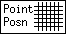
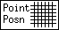
属性ボタンには以下のものがあります。
![[PEN COLOR]](../images/pen-color-button.png) 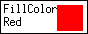
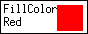
![[FILL STYLE]](../images/fill-style-button.png)
![[LINE WIDTH]](../images/line-width-button.png)
![[LINE STYLE]](../images/line-style-button.png) 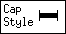
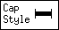
![[TEXT JUSTIFICATION]](../images/text-justify-button.png)
![[TEXT FLAGS]](../images/text-flags-button.png)
![[BOX CURVE]](../images/box-curve-button.png)
![[NUMBER OF POLYGON SIDES]](../images/num-sides-button.png)
![[NUMBER OF COPIES]](../images/num-copies-button.png) 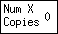
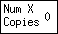
![[NUMBER OF X COPIES]](../images/num-y-copies-button.png)
![[ROTATION ANGLE]](../images/rotation-angle-button.png) 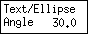
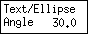
![[ANGLE GEOMETRY]](../images/angle-geom-button.png)
![[VERTICAL ALIGN]](../images/vertical-align-button.png)
![[HORIZONTAL ALIGN]](../images/horiz-align-button.png)
通常は、その時に選択されているモードにおいて意味を持つ 属性ボタンのみが実際に属性パネルに置かれます。 属性ボタンを一度に表示することができない場合には、 属性パネルにはスクロール・バーが付けられます。
属性ボタンの設定の変更は 属性ボタンをクリックすることによって行なえます。 それぞれのマウス・ボタンは次のような意味を持ちます。
UPDATE モードにおいては、 それぞれの属性ボタンの右上には UPDATE に際してその設定を適用するかどうかを指定するための 小さいトグル・ボタンが付けられ、 また属性パネルの左側には Update Control ボタンが置かれます。
(ZOOM SCALE)
 このボタンをマウスボタン1でクリックすると
ポップアップ・パネルが開かれ、
拡大率をキーボードから入力することが可能となります。
このボタンをマウスボタン2、もしくはマウスボタン3でクリックすると、
拡大率が 1よりも大きい場合には拡大率は 1.5倍の比率で、
拡大率が1以下である場合には0.1刻みで、
また拡大率が 0.1以下である場合には0.01刻みで増加、もしくは減少します。
このボタンをマウスボタン1でクリックすると
ポップアップ・パネルが開かれ、
拡大率をキーボードから入力することが可能となります。
このボタンをマウスボタン2、もしくはマウスボタン3でクリックすると、
拡大率が 1よりも大きい場合には拡大率は 1.5倍の比率で、
拡大率が1以下である場合には0.1刻みで、
また拡大率が 0.1以下である場合には0.01刻みで増加、もしくは減少します。
キャンバスの拡大は、拡大したい領域を キャンバス上で指定することによって行なうこともできます。 このためには、キャンバス上で、CONTROL キーを押した状態で マウスボタン1 (`zoom area') をクリックすることによって 拡大したい領域の1つの角を指定し、 次にその対角でマウスボタン1 (`final point') を押すことにより、 拡大したい領域を指定します。
xfig がホイール・マウス・サポートを有効としてコンパイルされている (Imakefile の WHEELMOUSE で) 場合には、 キャンバス上で SHIFT キーを押した状態でホイールを回転させると ポインタの周囲で表示を拡大/縮小し、 また CONTROL キーを押した状態でホイールを回転させると キャンバスを上下にスクロール (パン) します。
また、キャンバス上で、CONTROL キーを押した状態で マウスボタン3 (`unzoom') をクリックすることにより、 拡大率を1に戻すこともできます。
キャンバス上で領域を指定して拡大を行なう場合の拡大率を 整数に制限したい場合には、Zoom ポップアップ・パネルの Integer zoom ボタンを ON としておきます。
図がちょうどキャンバス一杯になるように拡大するためには、 Zoom ポップアップ・パネルの Fit to canvas ボタンをクリックします。 Integer zoom が ON となっている場合には、 拡大率が1未満とならない限り、 拡大率は図全体をキャンバス上に表示できる最大の整数の値に設定されます。
ズームも参照して下さい。
``深さ'' はオブジェクトが重なり合った場合に どちらのオブジェクトが隠されるかを規定するものであり、 より大きい ``深さ'' を持ったオブジェクトは より小さい ``深さ'' を持ったオブジェクトによって隠されるようになります。 ``深さ'' は 0 から 999 の範囲の整数となります。
同じ ``深さ'' を持ったオブジェクトが重なり合った場合には どちらのオブジェクトが隠されるかはわかりませんし、 画面での表示と印刷の結果とが異なったものとなる可能性もあります。
通常は全ての深さのオブジェクトがキャンバス上に表示されますが、 ユーザーはどの深さのオブジェクトを表示や編集の対象とするかを 制御することができます。 これについては Depth パネル を参照して下さい。
UPDATE による 複合オブジェクトの深さの更新に際しては、 それに含まれるオブジェクトの相対的な深さが維持したままで、 最も小さい深さを指定された値に設定します。 例えば、ある複合オブジェクトが深さ 3、8、及び 11 のオブジェクトを含んでおり、 この複合オブジェクトの深さが 2 に変更された場合には、 それに含まれるオブジェクトの深さはそれぞれ 2、7、及び 10 となります。
(GRID MODE)
このグリッドの間隔は、 寸法の単位がインチとなっている場合には 1/8inch、1/4inch、1/2inch、及び 1inch の中から、 寸法の単位が cm となっている場合には 2mm、5mm、1cm、及び 2cm の中から選択することができます。
このグリッドは、オブジェクトの配置を制限する効果は持ちません。 オブジェクトの配置を制限したい場合には、 POINT POSITION を使用して下さい。
このグリッドの間隔は、寸法の単位 がインチとなっている場合には 1/16inch、1/8inch、1/4inch、1/2inch、及び 1inch の中から、 寸法の単位が cm となっている場合には 1mm、2mm、5mm、1cm、及び 2cm の中から選択することができます。
これは、編集に際してどのオブジェクトが 「掴み上げられる」かも制限します。 オブジェクトがここで指定されたグリッド上にない場合には、 そのオブジェクトを掴み上げることはできません。
このグリッドは画面には表示されません。 目に見えるグリッドは、 GRID MODE によって設定することができます。
 (ROTATION ANGLE)
(ROTATION ANGLE)
TEXT や ELLIPSE の角度は、 TEXT/ELLIPSE ANGLE によって設定することもできます。
オブジェクト (例えば BOX など) によっては90度単位での回転のみが可能であることに注意して下さい。
このボタンをマウスボタン2、もしくはマウスボタン3でクリックすると、 角度が15度刻みで減少、もしくは増加します。 マウスボタン1でクリックすると、 角度を入力するためのポップアップ・パネルが開かれます。
すでに入力されているオブジェクトを回転させたい場合には、 ROTATE を用いることもできます。 ROTATION ANGLE も参照して下さい。
(NUMBER OF POLYGON SIDES)
(NUMBER OF COPIES)
ARRAY PLACEMENT によって生成するコピーの数は、 NUMBER OF X COPIES、 及び NUMBER OF Y COPIES によって設定します。
(NUMBER OF X COPIES /
NUMBER OF Y COPIES)
COPY & ROTATE によって生成するコピーの数は、 NUMBER OF COPIES によって設定します。
 MOVE
MOVE
 SLIDE
SLIDE
円 や 楕円 などに接した線は リンクとしては扱われません。 そのような線に対してスマート・リンク機能を有効としたい場合には、 その円などのオブジェクトを 複合オブジェクト にしてみて下さい。
(VERTICAL ALIGN)
![[None]](../images/vertical-align-none.png) 垂直方向の整列は行ないません。
垂直方向の整列は行ないません。
![[Even Edge]](../images/vertical-align-edge-even.png) オブジェクトのエッジの間隔が均等になるように整列します。
オブジェクトのエッジの間隔が均等になるように整列します。
(HORIZONTAL ALIGN)
![[None]](../images/horiz-align-none.png) 水平方向の整列は行ないません。
水平方向の整列は行ないません。
![[Center]](../images/horiz-align-center.png) オブジェクトの中心を揃えます。
オブジェクトの中心を揃えます。
![[Right]](../images/horiz-align-right.png) オブジェクトの右端を揃えます。
オブジェクトの右端を揃えます。
![[Even Edge]](../images/horiz-align-edge-even.png) オブジェクトのエッジの間隔が均等になるように整列します。
オブジェクトのエッジの間隔が均等になるように整列します。
![[Abut Edge]](../images/horiz-align-abut-edge.png) オブジェクトのエッジが接するように整列します。
オブジェクトのエッジが接するように整列します。
(ANGLE GEOMETRY)
 Unrestricted
Unrestricted
 LaTeX Line
LaTeX Line
 LaTeX Vector
LaTeX Vector
 Manhattan
Manhattan
(PEN COLOR)
このボタンをマウスボタン1でクリックすると、 Colors パネル が開かれます。
オブジェクトの内部の塗りつぶしの色は、 FILL COLOR、 及び FILL STYLE で設定します。 オブジェクトの外形を描画せずにその内部の塗りつぶしのみを行ないたい場合には、 LINE WIDTH を 0 に設定して下さい。
このボタンをマウスボタン1でクリックすると、 Colors パネル が開かれます。
オブジェクトの外形の色は、PEN COLOR で設定します。 FILL COLOR の設定は、FILL STYLE で None 以外が選択されている場合に限って意味を持ちます。 塗りつぶしを行ないたくない場合には、 FILL STYLE で None を選択して下さい。
(FILL STYLE)
このボタンをマウスボタン1でクリックすると、 次のようなポップアップ・パネルが開かれます。
(LINE WIDTH)
これを 0 に設定した場合にはオブジェクトの外形は描画されなくなります。 しかし、その場合でも FILL STYLE で 塗りつぶしが指定されていれば内部の塗りつぶしは行なわれます。
(LINE STYLE)
このボタンをマウスボタン1でクリックすると、 次のようなポップアップ・パネルが開かれます。
線の末端の形状は CAP STYLE で設定します。
この設定は、破線や点線などの 個々の線分や点の形状にも影響します。 線の結合部 (角) の形状は JOIN STYLE で設定します。
矢印の形状は ARROW TYPE によって、 またその大きさは ARROW SIZE によって 設定することができます。 すでに入力されているオブジェクトに矢印を付けたい場合 (あるいは矢印を削除したい場合) には、 ADD/DELETE ARROW を用いることもできます。
矢印の大きさは ARROW SIZE によって 設定することができます。
このボタンをマウスボタン1でクリックすると、 次のようなポップアップ・パネルが開かれます。
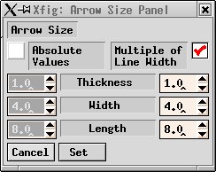![[Arrow Head]](../images/arrow-size-image.png)
Thickness は矢印の線の太さを、 Width は矢印の横幅を、 Height は矢印の長さを設定します。
これらの単位は LINE WIDTH の単位と同一です。 これは以前のバージョンの xfig (横幅と長さの単位が 1/1200インチだった) から変更されています。
Absolute Values ボックスがチェックされている場合には 左側の値が用いられ、 それらの値がそのまま矢印の大きさとなります。 Multiple of Line Width ボックスがチェックされている場合には 右側の値が用いられ、 線の太さにそれらの値を掛けたものが 矢印の大きさとなります。
(BOX CURVE)
 OPEN ARC
OPEN ARC
 PIE-WEDGE
PIE-WEDGE
このボタンをマウスボタン1でクリックすると、 フォントの選択を行なうための Font パネル が開かれます。
(TEXT JUSTIFICATION)
 LEFT JUSTIFIED
LEFT JUSTIFIED
 RIGHT JUSTIFIED
RIGHT JUSTIFIED
(TEXT FLAGS)
このボタンをマウスボタン2、もしくはマウスボタン3でクリックすると、 そのボタン上にどのフラグの状態を表示するかが切り替えられます。
このボタンをマウスボタン1でクリックすると、 次のようなポップアップ・パネルが開かれます。
Hidden フラグを ON とすると、 キャンバス上にはテキスト自身の代わりに 文字列 ``<<>>'' が表示されるようになります。 Print や Export に際しては、 そのテキストは通常通りに出力されます。 これは、テキストが LaTeX の長いコマンドを含んでいる場合などに 表示が見にくくなることを防ぐために使用することができます。
Rigid フラグを ON とすると、 そのテキストを含んだ 複合オブジェクトが スケーリングされた場合でも、 そのテキストのフォントの大きさを変更しないようになります。
Special フラグを ON とすると、図の LaTeX フォーマットでの Export に際して、 テキストに含まれる特殊文字 (``\'' など) を特別扱いせず、 そのまま出力するようになります。 これはテキストに LaTeX のコマンドを含める際に使用することができます。 LaTeX のコマンドの使用は、 特に図の中に複雑な数式などを書きたい場合などに有用です。 Special フラグが OFF となっている場合には、 特殊文字はその文字を印刷することができるように 適切に変換した上で出力されます。
その設定を変更すると、パネルの上部のイメージが その寸法線がどのように見えるであろうかを示します。![[Dimension Lines]](../images/dimline-panel.png)
赤、緑、及び青のスライダの上のボタンの 2つ、もしくは3つを選択した状態とすると、 それらのスライダは ``ロック'' され、 Lock スライダを動かすことによって同時に動かせるようになります。
Font パネルには、PostScript フォントの選択のためのものと、 LaTeX フォントの選択のためのものとがあります。
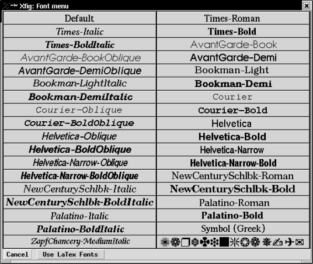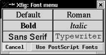
いずれかのフォントのボタン (ボタンのラベルはそのフォントで表示してある) をクリックすると、 そのフォントが選択されます。 Use LaTeX Fonts ボタンをクリックすると パネルが LaTeX のフォントの選択のためのものに、 Use PostScript Fonts ボタンをクリックすると パネルが PostScript フォントの選択のためのものに切り替えられます。
PostScript フォントの選択のためのパネルに含まれているすべてのフォントが、 すべての PostScript プリンタで使用可能であるとは限りません。 また、画面への表示に際して、 指定したものと異なったフォントが用いられることもあります。 しかし、少なくとも Times-Roman、Times-Italic、 Times-Bold、Times-BoldItalic、 Courier、Courier-Oblique、 Courier-Bold、Courier-BoldOblique、 Helvetica、Helvetica-Oblique、 Helvetica-Bold、及び Helvetica-BoldOblique については、ほとんどすべての環境で使用可能であるものと思われます。
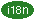 国際化 xfig では、 日本語環境においては ``Times-Roman'' と ``Times-Bold'' が
に、韓国語環境においては
に置き換えられ、これらのフォントを選択した場合には テキストに日本語や韓国語を含めることが可能となります。 これについては 国際化 を参照して下さい。
![[Update Control Buttons]](../images/update-control.png)
![[Fill Style Panel]](../images/fill-style-panel.png)
![[Line Style Panel]](../images/line-style-panel.png)
![[Join Style Panel]](../images/join-style-example.png)
![[Cap Style Example]](../images/cap-style-example.png)
![[Text Flags]](../images/text-flags-panel.png)
![[Color Panel]](../images/color-panel.png)